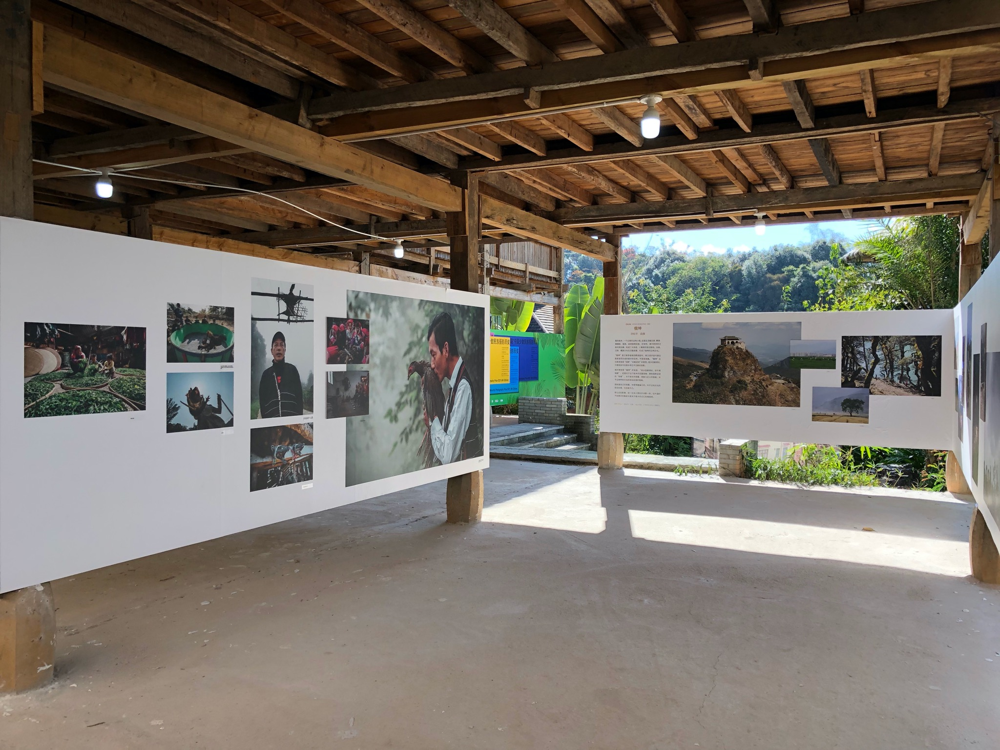
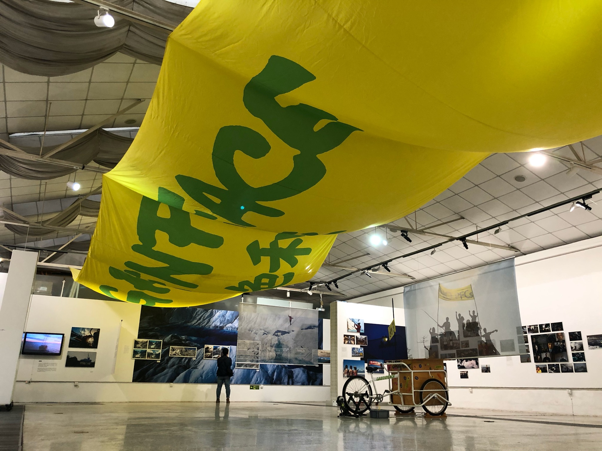

Projects
Selected curatorial and exhibition-making projects across contemporary art, lens-based media and visual ethnography.
01
EV+1
An ongoing, small-scale exhibition series supporting emerging artists and established practitioners testing unconventional approaches. Conceived as both a debut platform and an experimental space, it creates room for practices and subjects that can be difficult to accommodate within larger institutional formats.


02
Chinese Visual Ethnographic Photo Biennale
Curatorial and exhibition work bringing photographic practice into dialogue with visual anthropology, ethnographic enquiry and the politics of representation.
03
Archive in progress
Further project texts, installation views and publication materials will be added as the archive develops.

